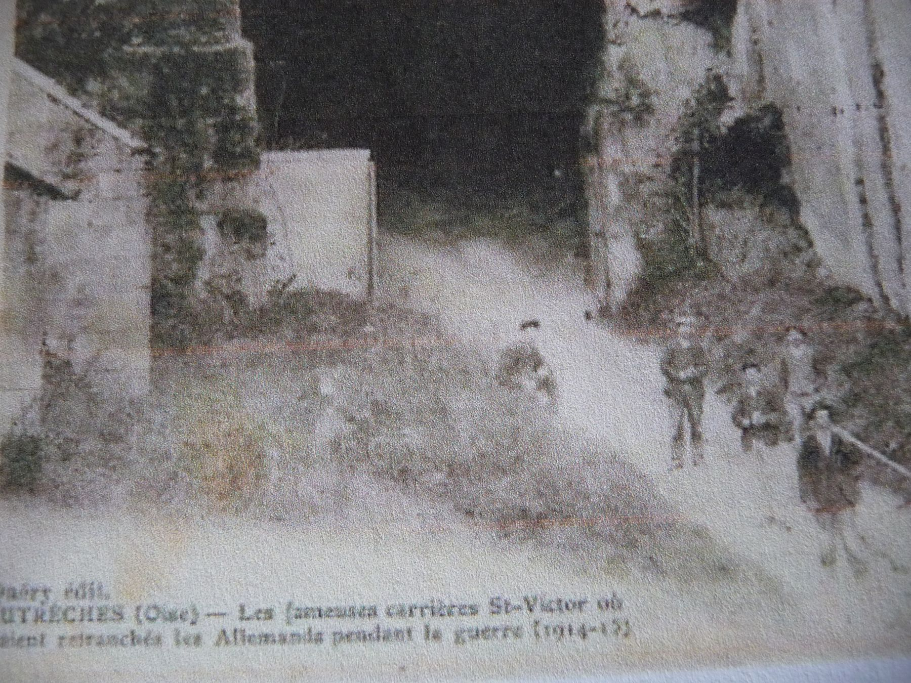

de la carrière à la ferme et de la ferme au centre équestre.
Nous nous sommes longtemps interrogés sur l’origine de ce lieu. Devait-on faire remonter son établissement au début du second millénaire, période de défrichement de nos plateaux et de fondation de toutes les grandes fermes de plaine ?
Sa situation sur la crête, sa configuration, les fortifications qui restaient en 1914, font penser aux fermes fortifiées du XIVème siècle, que l’Abbaye Saint-Médard de Soissons possédait aux environs (Confrécourt à Nouvron, Moufflaye à Saint-Christophe ; Touvent à Moulin, Forest à Morsain).
Pourtant Saint-Victor ne figure sur aucune carte ancienne et nul document n’en fait état avant la fin du XIXème siècle … Et pour cause, car la ferme n’a été édifiée qu’à cette époque, à l’emplacement d’un moulin à vent.
Avant d’en rapporter l’histoire, rappelons que nos carrières ont commencé à être exploitées depuis la nuit des temps, mais à très petite échelle et pour les besoins locaux, compte tenu des énormes difficultés de déplacement des blocs.

Viennent la révolution des transports, l’amélioration des routes, la canalisation des rivières, l'arrivée du chemin de fer enfin. L’élément décisif pour nos carrières fût la canalisation de l‘Aisne : les ports de Vic et d’Attichy furent aménagés et la pierre partit pour les villes : Compiègne, Paris …
Dans la perspective de nouveaux débouchés, François Fontaine, (né en 1820 à Dreslincourt, près de Ribécourt) s’installe en 1851 dans la carrière qui portait déjà le nom de Saint-Victor (comme l’église d’Autrêches) et entreprend de l’exploiter par les méthodes modernes. La canalisation de l'Aisne et l'arrivée du chemin de fer vont offrir des débouchés considérables notamment à la carrière St Victor.
Ainsi, l’exploitation est-elle menée tambour battant et des kilomètres de galeries sont-elles creusées.
La construction de bâtiments avec de petites tourelles d'angle pour donner un petit aspect féodal, commence autour de l’entrée de la carrière. Cinq ans plus tard, la construction est presque achevée. Son aspect restera inchangé jusqu'en 1914 et la « ferme » est celle que les anciens nous ont dit avoir vue .
François Fontaine prend alors pour femme une jeune fille d’Autrêches âgée de 18 ans, Amélie Félicité Lefevre, de 19 ans sa cadette. Deux petites filles ne tardent pas à venir à leur foyer.
Les affaires de Fontaine continuent de se développer ; il aurait été jusqu'à fournir des pierres pour la construction de la Gare du Nord à Paris. Fontaine fait travailler plusieurs hommes de la commune –pas seulement comme carriers d’ailleurs, puisqu’il ajoute une activité de cultivateur à son activité principale : il loge à la ferme, un contremaître de culture, deux charretiers et un palefrenier en 1866.
Peu avant 1890, François Fontaine s'associe avec son gendre Martin Gustave Collignon, Maître carrier, né en 1847 dans la Meuse, tandis que sa veuve et la mère de celle-ci, Elisabeth Amory, veuve Prévost (malgré ses 71 ans) s’occupent plus particulièrement de la ferme.
En 1891 le personnel agricole n’a jamais été si nombreux : quatre charretiers, un berger, deux bouviers et un valet de cour sont logés à la ferme. Toutefois, l'essentiel de l'activité reste l'extraction de la pierre.
Les qualités de la pierre de St Victor sont telles qu'elle est choisie pour participer à la restauration du château de Pierrefonds. Elle est décrite de la manière suivante : calcaire blanchâtre, quelques fois rubané de jaune, homogène à grain fin ou très fin (Terrain tertiaire éocène). Sa résistance à l'écrasement est bonne. Le prix de chaque M3 s'établit en 1889 entre 15 et 20 F en carrière ou 18 à 22 au port. Chaque M3 pèse près de 1,6 tonne !
Après avoir repris seul la direction des activités d'extraction Gustave Collignon, est élu Maire d’Autrêches et le demeure jusqu’en octobre 1907.
Au début du siècle, il quitte Saint-Victor pour aller se fixer, Chemin du Casse-Cou, dans une grande maison au dessus du presbytère d’Autrêches. Gustave Pamart, né en 1866 à Saint-Christophe, le remplace à Saint-Victor où la guerre viendra le déloger.
Transformée en forteresse par les Allemands, la ferme est rasée puis reconstruite telle que nous la voyons aujourd’hui à quelque distance des bâtiments primitifs, dont les fondations furent longtemps visibles dans les champs.
Après avoir été utilisée en 1939-1940 comme lieu de relégation pour des assignés à résidence jouissant d'un régime de semi-liberté, la ferme devint la propriété de nos amis de l’Hermitage qui, s’ils ne s’y livraient plus à la culture ou à l’extraction de la pierre, surent donner à ce lieu une destination récréative et curative sous l’impulsion initiale du rayonnant docteur René Garrigues décédé en 2017.
La ferme St Victor a été achetée en 2017. Depuis, les activités de centre équestre y ont été relancées avec pédagogie et dynamisme.